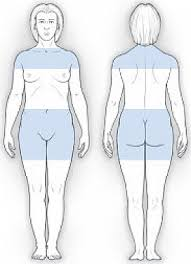

Learn when to execute this life-saving treatment on young children as well as adults.
Insulin is injected into fatty tissue. In the figure below, fatty tissue is shaded.
When utilizing this site, avoid using the region within one inch of your belly button. Avoid utilizing the belt line region since friction may cause irritation. Avoid surgical scars.
Arms: Use the fatty tissue on the rear side of your upper arm. It might be difficult to access this region on your own. You can try pinching the tissue by bracing your arm against a wall or resting it over the back of a chair.
Thighs: Pinch up tissue in the central and outside portions.
Buttocks: Use any place where tissue may be pinched up. Because it is difficult to access, this site is rarely utilized.
To avoid tissue injury, rotate your injection sites. Insulin may not absorb as efficiently if tissue is injured. This may make controlling your blood glucose more difficult. To avoid these issues, some people retain a record of where their previous injection was administered. If you just use one site, such as the abdomen, be sure to alternate photos inside that site.
If you require two types of insulin at the same time of day and prefer to inject them at the same time, you may be able to mix them in a single syringe. See the highlights below.
(Not all forms of insulin can be blended. Check with your doctor to see whether mixing insulin kinds makes sense for you.)
Before drawing up insulin, inject air into both vials.
Always make your clear insulin first, then your cloudy insulin.
If you draw too much hazy insulin, throw it away and start over.
NPH and normal insulin can be pre-filled for up to 21 days.
Refrigerate these pre-filled syringes with the needle tip directed upward. Before usage, rotate the syringe to mix the two insulins.
If you mix NPH with rapid-acting insulin in the same syringe, administer the dose as soon as possible after drawing it up.
Glargine should not be filled in advance. After drawing it up, inject it as quickly as possible.